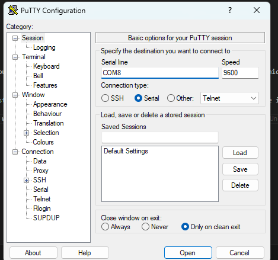
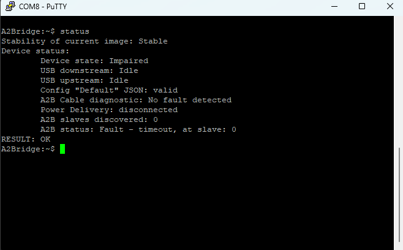
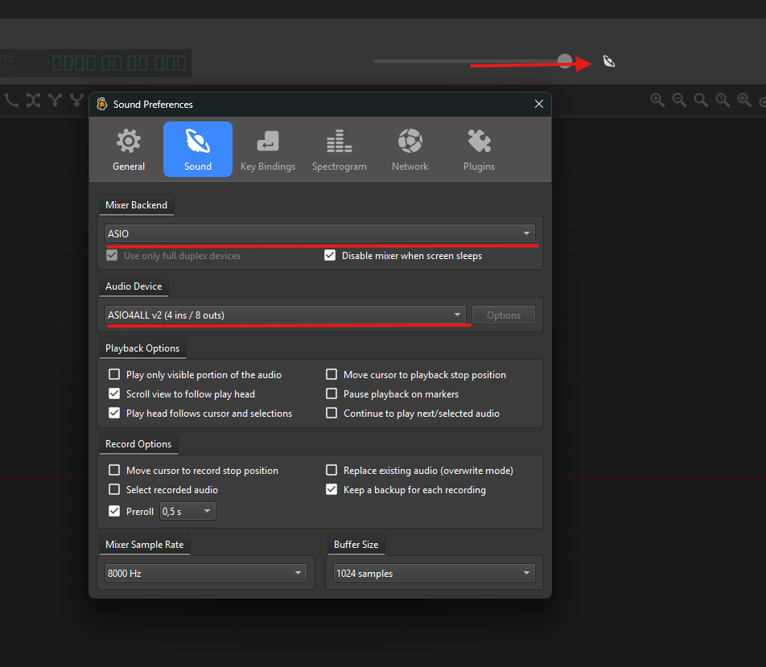
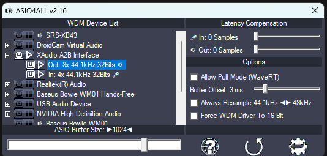
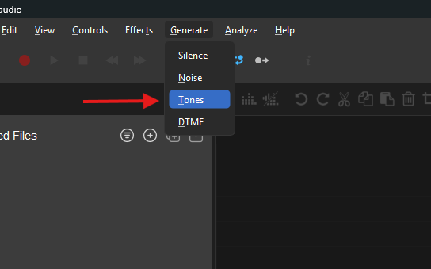
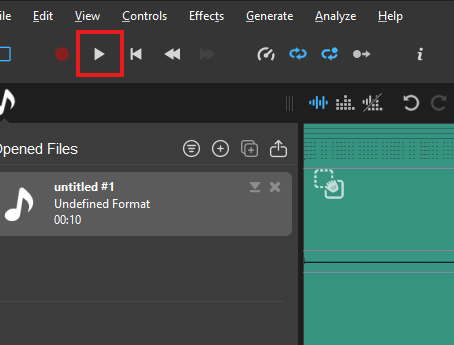
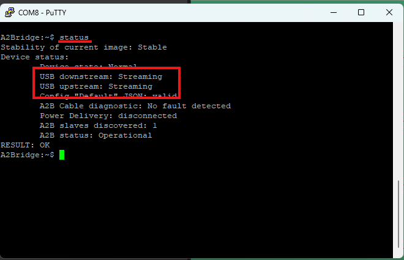

Setup
Windows setup
You do not have to make any pre-installation when your Host PC uses Windows OS. It's enough to just plug the A2Bridge to any free USB connector using delivered USB cable.
But by default, Windows OS cannot transmit more than 2 audio channels to or from the USB audio devices. To use more than 2 audio channels, additional drivers need to be installed (Check Download – ASIO4ALL Official Home). After installation of additional drivers, it can be used in programs like Audacity or ocenaudio.
Attention:
A2Bridge can be used either with Python and WDM-KS drivers (preferred option) using libraries such as sounddevice, or with ASIO-based applications.
Linux setup
Linux can handle multiple audio channels natively without requiring any additional drivers.
A2Bridge as a master
This guide prepares a test configuration that transmits 8 downstream channels and receives 4 upstream channels using 32-bit audio resolution. The slave device must be powered using 12 V phantom power.
Connect the A2Bridge as shown in the provided example diagram. Phantom power is delivered using a USB charger.

Master Configuration example with phantom power delivered by USB charger
Once connected to the PC, the A2Bridge appears as a mass storage device. Open this device and edit the CONFIG.TXT file.

A2Bridge as a mass storage device in Windows
{
"Version": "1.31",
"Name": "Default",
"ResetOnNew": "True",
"A2BRole": "Master",
"AudioResolution": 16,
"UsbInputChannels": 2,
"UsbOutputChannels": 2,
"RunInProtobufMode": "False",
"SupplyVoltage": 5000,
"AudioRouteMatrixDownstream": [
[1],
[2],
],
"AudioRouteMatrixUpstream": [
[1],
[2],
],
"A2BMasterConfig" : {
"SlavesOnBus": 1,
"DnSlots": 8,
"UpSlots": 8,
"SlaveConfiguration":[
{
"Node": 0,
"DnSlots": 0,
"LocalDnSlots": 8,
"UpSlots": 0,
"LocalUpSlots": 8,
"PowerConfig": "High",
"CableLength": 4,
"ConfigureTDM": "True",
"TdmTxLines": 1,
"TdmRxLines": 1,
"TDMMode": "TDM8",
"TDMOptions": ["EARLY", "INV", "ALT"]
}
]
},
"A2BSlaveConfig":
{
"TdmRxChannels": 1,
"TdmTxChannels": 1
}
}
The configuration file needs to be modified according to our needs. The first thing that we need to check is the A2BRole parameter.
"A2BRole": "Master",
The next thing we need to check is the audio configuration and number of channels
"AudioResolution": 16,
"UsbInputChannels": 2,
"UsbOutputChannels": 2,
"AudioResolution": 32,
"UsbInputChannels": 8,
"UsbOutputChannels": 4,
Please remember that not all of the USB PD chargers support 12V. To verify if your charger does please read the rating plate of your USB charger.

USB charger supporting 12V
The next we are going to prepare audio routing matrices. We are going to transmit each USB channel to corresponding A2B channels so the matrix is going to be simple.
"AudioRouteMatrixDownstream": [
[1],
[2],
[3],
[4],
[5],
[6],
[7],
[8]
],
"AudioRouteMatrixUpstream": [
[1],
[2],
[3],
[4],
],

Routing matrix visualization
Next the A2B bus and slaves need to be configured.
"A2BMasterConfig" : {
"SlavesOnBus": 1, <- There is one slave on our bus
"DnSlots": 8, <- 8 channels downstreamed
"UpSlots": 4, <- 4 channels upstreamed to usb
"SlaveConfiguration":[
{
"Node": 0, // <- Node number starting from 0
"DnSlots": 0, // <- Number of channels send down
"LocalDnSlots": 8, // <- Number of channels consumed by node
"UpSlots": 0, <- Number of channels forwarded from down to up
"LocalUpSlots": 4, <- number of channels produced by the node
"PowerConfig": "Low",
"CableLength": 4,
"ConfigureTDM": "True",
"TdmTxLines": 1,
"TdmRxLines": 1,
"TDMMode": "TDM8",
"TDMOptions": ["EARLY", "INV", "ALT"]
}
]
}
So in the end we have following configuration
{
"Version": "1.31",
"Name": "Default",
"ResetOnNew": "True",
"A2BRole": "Master",
"AudioResolution": 32,
"UsbInputChannels": 8,
"UsbOutputChannels": 4,
"RunInProtobufMode": "False",
"SupplyVoltage": 12000,
"AudioRouteMatrixDownstream": [
[1],
[2],
[3],
[4],
[5],
[6],
[7],
[8]
],
"AudioRouteMatrixUpstream": [
[1],
[2],
[3],
[4],
],
"A2BMasterConfig" : {
"SlavesOnBus": 1,
"DnSlots": 8,
"UpSlots": 4,
"SlaveConfiguration":[
{
"Node": 0,
"DnSlots": 0,
"LocalDnSlots": 8,
"UpSlots": 0,
"LocalUpSlots": 4,
"PowerConfig": "High",
"CableLength": 4,
"ConfigureTDM": "True",
"TdmTxLines": 1,
"TdmRxLines": 1,
"TDMMode": "TDM8",
"TDMOptions": ["EARLY", "INV", "ALT"]
}
]
},
"A2BSlaveConfig":
{
"TdmRxChannels": 1,
"TdmTxChannels": 1
}
}
As the new configuration has been saved the A2Bridge should restart and start the new discovery according to our configuration. Please check if LED_1 (see the home page) is green which means that A2Bridge succesfully discovered all configured slave and no errors occured. LED_4 Should also be green. If it's yellow then it means that your charger does not support 12V.

A2Bridge in operable state with external power supply attached
When the device is connected we can check it's status with virtual com port console. Any Serial port terminal will work, in our example we will use PuTTy.

PuTTy configuration to open A2Bridge console.
Bandwidth
Since A2Bridge Serial port is virtual the entered bandwidth does not matter and it can be set to anything.
To read the A2Bridge status we use status command.

A2Bridge status with all of the nodes discovered.

A2Bridge status. Undiscovered nodes.
Troubleshooting
In case of missing node please check the cable connection.
Now we can transmit the data. In our example we will use python script to transmit the sine wave. I configured the subnode to loopback channels 1 -> 1, 3 -> 2, 5 -> 3, 7 -> 4.
Audio produced with python script
To transmit the data we use sounddevice library (The audio can also be transmitted with ASIO4ALL and programs like Audacity or ocenaudio). The code below generates the sine wave and fullfills the audio buffer in callbacks.
Please see the play script to find python code. The record script can be used to record the upstream.
Once the audio is recorded the plot should show the sine wave like in the image below.

PyPlot output.
Audio produced with ocenaudio
The second option to handle multi-channel configuration is to use ocenaudio with ASIO4ALL host API. Install both of these programs and start the ocenaudio. Configure the output Device by following the image below. 
Ocenaudio config.
Then configure the ASIO4ALL.

ASIO4ALL icon in windows menu.
Please check if all of the other devices are disabled and enable the "XAudio A2B Interface" only 
Configuration of Asio4ALL.
Then we can go back to ocenaudio and generate the channels content that we want to play.

Ocenaudio generate tone menu.

Ocenaudio generate channels content.
Once you create the audio output you can start playing the audio using A2Bridge. Play generated sine wave.
The status command should inform about streaming in USB downstream.

Status USB streaming